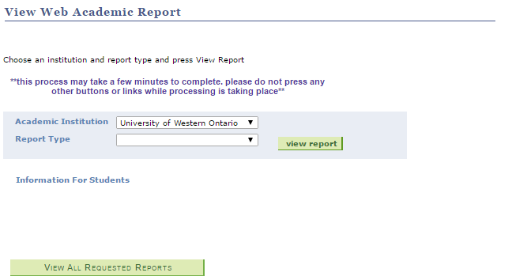

Order transcripts
Here you can order transcripts, and see your past orders since June 1, 2007.
Requests with a status of Ordered are in process and will be issued provided there are no holds on your account. Requests with a status of Pending will be processed when all specified conditions have been met (for example, if a transcript is to be issued after Convocation).
Check this page again to see when your transcripts are Complete and to see the date that your transcripts were printed.
Transcripts to be picked up from Student Central, Western Student Services Building, Room 1120, will be held for 6 months.
If you have selected to have your transcript(s) sent by courier, the courier service utilized by Western University is FedEx. With the tracking number listed below, please either call 1-800-GoFedEx or visit their website.
If you have any questions about the status of your request, please contact the Student Central Helpline at 519-661-2100.
| Request Date | Request # | Delivery Type | Address | Status | Delivery Details |
|---|